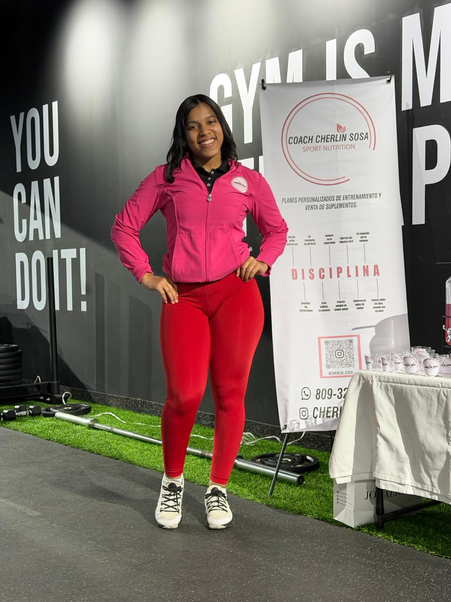

Las invitadas
Cuatro mujeres. Cuatro historias reales.
Una tarde que no olvidarás.
Gaby
Más de 8 años transformando vidas — no solo cuerpos. Gaby sabe lo que es luchar con la culpa de "no tener tiempo", sentir que el cuerpo no responde y seguir de pie con una sonrisa. Ha acompañado a más de 200 mujeres en su proceso y conoce cada excusa, cada miedo y cada victoria pequeña que nadie celebra. Hoy crea este espacio desde su propia historia.
"Entrenar me salvó. Pero fue la comunidad la que me transformó de verdad."
Maríah Espinal
Maríah no llegó a la vida saludable por una foto en Instagram. Llegó porque necesitaba sentirse bien por dentro — como mamá, como mujer, como hija de Dios. Hoy comparte ese camino con honestidad brutal: los días difíciles, las recaídas, los pequeños logros que nadie ve pero que lo cambian todo. Su historia te va a llegar al alma.
"Comer diferente me cambió el cuerpo. Elegirme a mí me cambió la vida."
 Invitada especial
Invitada especial
Lic. Himilce Cruz
La ansiedad, el agotamiento emocional, el sentir que nada es suficiente — Himilce ha visto eso de cerca y sabe que muchas mamás lo viven en silencio. Como psicóloga clínica y coach de bienestar, acompaña a mujeres a entender que cuidar la mente no es un lujo, es una necesidad. Su charla te va a dar permiso de sentir lo que llevas tiempo callando.
"No se trata de ser una supermamá. Se trata de ser una mamá entera."
Cherlin Nicol
Cherlin lleva más de 5 años desmontando el mito de que ponerse en forma es cosa de genética o de vivir en el gym. Entrenadora personal, casi graduada en Nutrición y dueña de su propia tienda de suplementos — sabe exactamente qué hace falta para que los resultados lleguen y se queden. Sin extremos, sin dietas de hambre, sin excusas.
"La transformación real empieza cuando dejás de tratarte como el último elemento de tu lista."

Invitada especial